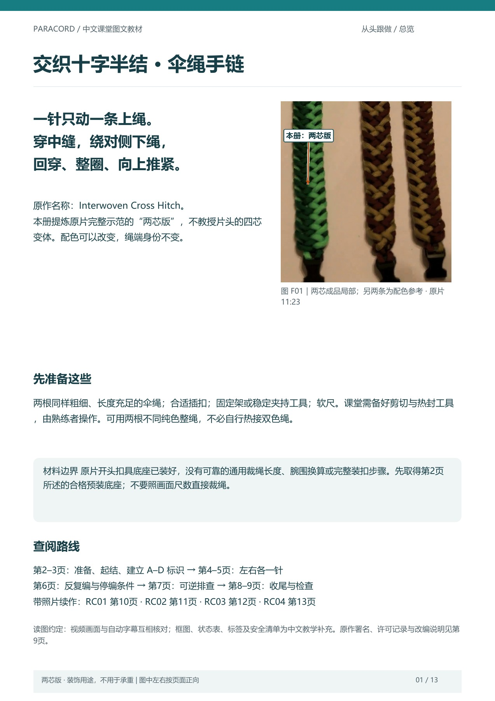

OMNIALE · CASE 6B · 原始交付阅读页
gpt-6.1-sol 的中文图文教材
模型交付的是 PDF。本页将原件逐页呈现，方便在线阅读；页面内容没有人工改写或补图。
原始 PDF SHA-256：070065f5b250406cb02ea7ed1c5ff90acb0401a58153ca3c2c40d40d5a469afb
网页页图为原始PDF渲染的JPEG预览；原件保持不变。评分信息在 case 展示页。

第 1 页 / 13 页
模型交付的是 PDF。本页将原件逐页呈现，方便在线阅读；页面内容没有人工改写或补图。
原始 PDF SHA-256：070065f5b250406cb02ea7ed1c5ff90acb0401a58153ca3c2c40d40d5a469afb
网页页图为原始PDF渲染的JPEG预览；原件保持不变。评分信息在 case 展示页。

第 1 页 / 13 页